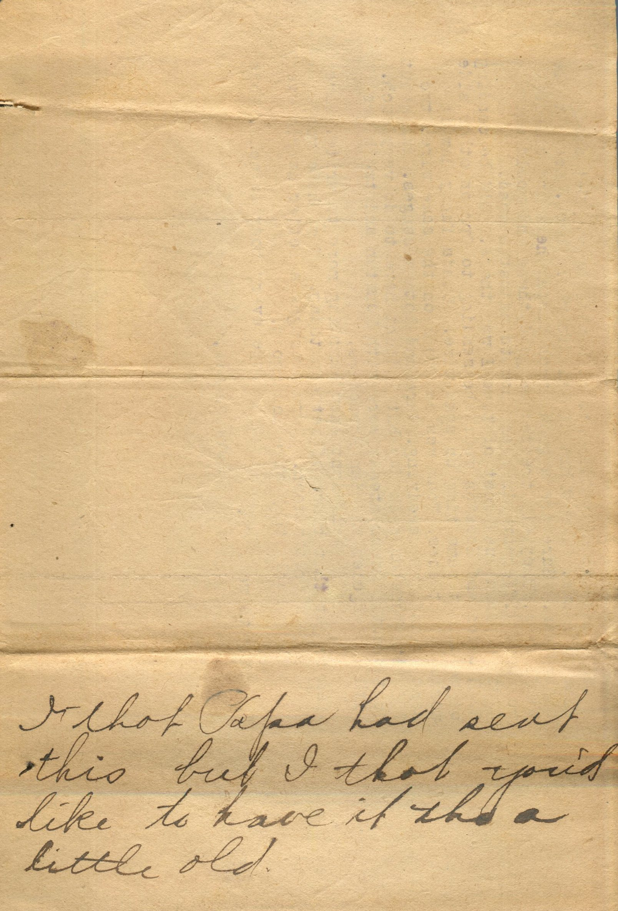
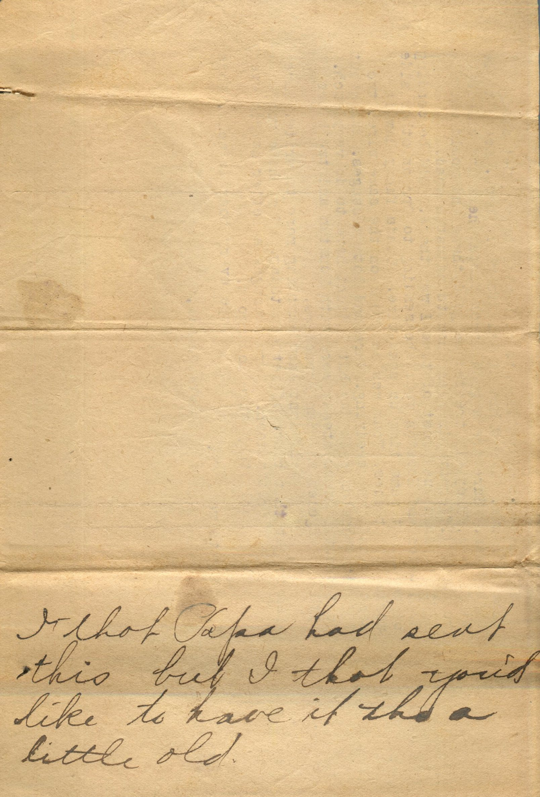

From: Martin Chandler, To: Elijah H. Chandler and Family

 
From: Martin Chandler, To: Elijah H. Chandler Mailed From: Sanderson on May 31, 1917
Dearest Papa, Mama, and all I received three letters from papa and one from mama,enclosing Lorin's and was sure tickled to get them. First mail I had received since leaving Valentine. Sure was too bad about that cyclone. Hope no more of them come along through here. Glad that one didnt hit Pearl. From looks of things I'm going to be here for couple months unless they send a man to relieve me and let me come to El Paso. I got all the clippings Papa sent. Wouldn't mind being with Pershings expedition if could get a good job. I went over to court house this PM and registered before County Clerk and Mailed it to registrar Pearl, care Sheriff Pittsfield. That way clerk said to address it. I enclosed stamped envelope so he could mail me a receipt. I must be there by the 5th. Should reach there in plenty of time. Golly its sure hot down here. Temperature of 110. Wish I was home. I couldn't quit very well now if I wanted to account them being so short of operators and couldn't get relief. This is a very large place. Like it better than Valentine though. It pays 7.50 more on the month. Is Aunt Sarah feeling OK? Hope so. She always was so good to me. Suppose Knox has stumped his toes a dozen times or so. Does he wash his feet before he goes to bed? Hope Lorin gets the job he mentioned. Gee wish I could see that kid of Grace's. I'll bet she is some baby. Have any of you been fishing this season yet? I'd like to be there and go squirrel hunting with Papa this season. Golly wish I was home. I only have one dispatcher to work with here. Get along fine with him. I saw him at Del Rio while back. Seems to be a nice man. Sure are a good bunch dispatchers and chiefs at El Paso. They all treat me good there and would show me about different wires and how to adjust a quad. I worked on a quad most of time I was there. I'd be sending to Houston and Houston would be sending to Opr on other side of me all at same time on same wire. Kinda funny how it works but it does. Four men can work on the same wire, two sending and two receiving. Sure had lots messages. Run about 700 with Houston each day but I didn't have to do very much. Just about 4 hours steady work with Houston and two hours with Los Angeles and San Francisco. Well don't know anything more to write. Sure glad to get that bunch of letters today. Mama hope you write again pretty soon. Papa averages a letter nearly every day and by golly they sure look good. Hope everybody is well. Hope Vinnie gets well OK. Love to all, Martin
On Back: I thot Papa had sent this but I thot you'd like to have it tho a little old.